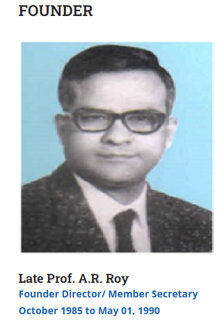

Institute of Applied Statistics & Development Studies[ I A S D S ] ( Registered under Societies’ Registration Act. 1860, Registration no. 3458/85-86 dated 26.10.1985 )

 |
 |
|
|  |
Anadi Ranjan Roy(1920-1990) took M.Sc. Degree in Pure Mathematics in 1942 and in Statistics in 1944, both from Calcutta University. After completing his postgraduate, he joined the Indian Council of Agricultural Research and rose to the position of Professor of Statistics there. During his stay at Calcutta, he had the privilege of being taught by Professor P.C. Mahalanobis, Professor R.C. Bose, and Professor P.K. Bose among others. Subsequently, he proceeded to USA for doctoral degree from Stanford University on a Fulbright Grant where he worked with several stalwarts including Professor Charles Stein, Herman Chernoff, and Meyer Girshick. His teachers and research associates/supervisors were highly impressed by his research work and potentials. In 1959, he joined the Department of Statistics, Lucknow University as Professor and Head and continued to hold the position till his retirement in 1980. |
LEGAL STATUSRegistered: Under Societies Registration Act. 1860, Registration no. 3458/85-86, valid till 25.10.2025 PAN Card Details: AAATI0945C 12A: IASDS is registered under 12A of Income Tax - Registration No.AAATI0945CE20218 dated 23.09.2021 for Five Assessment year 2022-23 to 2026-27. 80 G Donation Exempted: IASDS is registered under 80G of Income Tax - Registration No.AAATI0945CF20190 dated 23.09.2021 for Five Assessment year 2022-23 to 2026-27. NITI AAYOG registration ID: UP/2012/0052417 DSIR: Recognized by DSIR vide letter no. 13/293/2016-TU-V dated 07/10/2016 |
|||

End line Assessment of "To Improve the reproductive health of adolescent girls and women in age group on: 2023
Source of fund: Vatsalya, LucknowTestimonials
Thank you for inviting me to the Memorial Function on 27th Aug. 07. The fact Dr. Sheila Vir will be a chief guest & will be honoured at the function makes me extremely happy and proud. I met Sheila at a recent Conclave at Chennai and heard about this noble gesture of yours. We in Uttar Pradesh are all proud of Sheilas work as well as your work personally and through IASDS. It will be a privilege to be present in the occasion. With kind regards. SUNEEL K. MUTTOO RESIDENT ADVISOR A2Z PROJECT INDIA There is something very special about you and it becomes almost impossible for anyone not to be influenced by it. I am sorry that I could not be there from the beginning but it was very important for me to listen to the proceedings. Values are fast fading and I was able to see it in you and thats enough for me to have liked every bit of the day. Congratulations!!! I will be away for 10 days but I will give you a call once I am back.VISHWAJEET( JHON-HOPKINS )
WHY CHOOSE US?
Strives to generate statistical thinking and synthesize statistical sciences among other sciences in organizations engaged in development research so as to emerge with sound knowledge of implementable recommendations. Endeavors in capacity building of such organizations by advising them to use modern and appropriate statistical tools for evidence based, scalable and replicable outcomes. Conducts research studies, in-service training programs, provides consultancy, organises workshops on themes of global importance for other research organizations. Proves its merit by successfully intertwining statistical sciences in diversified areas like Primary Education, Agriculture & Rural Development, Health, Nutrition, HIV/AIDS, Urban Infrastructure Development including Water supply, Sanitation and Drainage, Waste Management, Hygiene and Socio-economic aspects.HOME ABOUT US MEMBERS INCUMBENCY |
OUR WORK GALLERY CONTACT US |
LOCATION1st floor,1/220 virat khand,gomtinagar, lucknow,226010 main campus |
FIND US ON: |
|||
 |
||||||